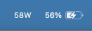
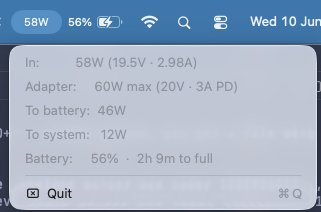
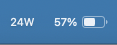
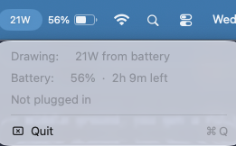

See exactly how many watts your Mac is pulling.
A tiny macOS menu bar app for USB-C charging power. Instantly tell whether a charger — or which port on a multi-port charger — is actually giving you good juice.
brew install --cask benlumley/tap/wattusb
macOS 14+ · Universal (Apple Silicon + Intel). First launch: right-click the app → Open, or xattr -dr com.apple.quarantine /Applications/wattusb.app
At a glance
The menu bar shows live watts. Click it for the full breakdown — whether you're plugged in or running on battery.




Why
No history graphs, no notifications, no settings. Just the number you wanted.
See if that charger is really delivering its rated power, or quietly throttling.
Multi-port chargers split power unevenly. Find the fast hole, every time.
A flaky cable caps the negotiated voltage — and the wattage drops with it.
See how input watts divide between charging the battery and running the Mac.
One Swift file, ~0% idle CPU, under 30 MB RAM. No dock icon, no window.
Reads IOKit directly. No network, no telemetry, no entitlements. Open source.
Under the hood
All data comes straight from macOS's AppleSmartBattery IOKit service.
PowerTelemetryData.SystemPowerIn, the watts flowing in from the adapter.AdapterDetails gives the voltage/current the charger negotiated as its max.Voltage × Amperage reveals how much is actually reaching the cells.